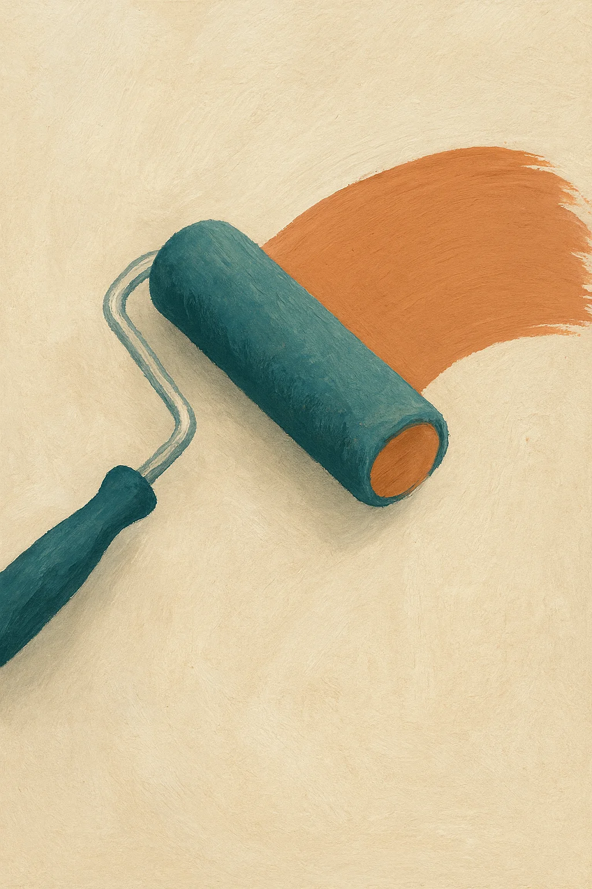

Peintre à Béziers : intérieur & façades
Rafraîchissement d’appartements, peinture murale, boiseries, ravalement de façade et badigeon à la chaux. Devis sous 24 h et chantier propre garanti.

Nos prestations à Béziers
Peinture intérieure
Murs, plafonds, boiseries et finitions. Conseils couleur, préparation soignée et protection des sols et meubles.
Façades & ravalement
Nettoyage, réparation, badigeon à la chaux ou peinture minérale pour un rendu durable et respirant.
Peinture à la chaux
Enduits et badigeons écologiques pour murs intérieurs ou extérieurs, personnalisables avec pigments naturels.
Peinture éco-responsable
Utilisation de produits biosourcés, faible COV, respectueux de votre santé et de l’environnement.
Pourquoi nous choisir ?
- Propreté de chantier : protections soignées et remise en état.
- Respect des délais : planning signé et dates fixées à l’avance.
- Conseil couleur : échantillons posés sur place et nuanciers RAL/NCS.
- Assurances RC Pro et décennale, garanties.
Demander un devis
Expliquez votre projet (type de pièce, superficie, état des supports…) et nous vous répondrons sous 24 h.